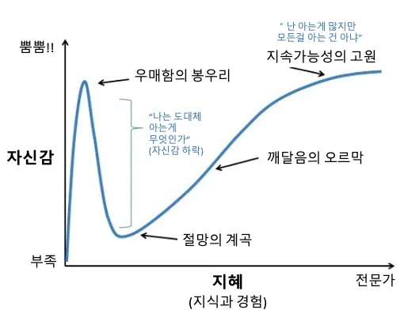

종교 어쩌구 관심도 없지만....
뭔가 기존 종교에서 벗어나서 어쩌구 하는 걸 보면
사람들이 걱정하는건 피해자 생기는거지 뭐
대충 메시아 병에 걸리는 중이다 그소리임?
우매봉에 걸려서 나라면 할수있다병 ㅋㅋㅋ
그 대사만은 하지 말아다오 ㅠㅠ
대부분의 연구가 그렇듯 이 세상에 내가 처음 생각해낸거 같으면 누군가 이미 생각해본적 있던거임
박사가 좆이 아닌 이유지
저 절망의 계곡을 극복하면 비닐바지를 뛰어넘는 제왑삐가 나오는거냐?
그니까 나만큼 이 학문을 공부해 본 사람 있음 나와보라 그래 이 상태인 거잖아?
막상 저런 말 괜히 안꺼내는 게 아닌데 나는 남달라병 이런 거네
더닝크루거 형님 오늘도 1승을 챙기시는군여
자기가 지속가능성의 고원에 있다고 믿는 우매한 봉우리들이 많지
난 봉사활동가서 만난 신부님이 기억에 남음. 땡볕에서 메리야스만 입고 애들 이불 말린거 털고 계셨는데 난 무종교긴한데 이렇게 고생하는데 하나님이 다 보고 계시겠죠? 라고 물어봤거든.
근데 대답이 몰라요. 그냥 애들이 깨끗한거 덮고 자는거 생각만 해봐도 행복하지 않나요?ㅎㅎ 하는데 사람이 신성해보이더라.
그냥 사랑을 나누고 전파하는게 종교 아닌가 싶었다
이태석 신부님 생각나네
와 글만 읽어도 마음이 감화되네
메리야스 목사 vs 빤스 목사
종교인으로써 이댓 너무 공감.. 무지성 혐오하지 말고 종교의 본질을 좀 봐주길 바람
https://n.news.naver.com/mnews/article/005/0001874910?sid=103
김진혁 횃불트리니티신학대학원대 교수 “결국 성경을 자기 논리로 읽다 보면 생길 수 있는 일로 목사나 신학을 훈련받은 선교사가 없는 일부 오지 선교지에서나 일어날 만한 신앙의 불균형” “초대교회 이후 지금까지 왜 삼위일체로 수많은 이단이 생겼는지만 살펴도 하지 않았을 발언”
vs
첫열매들교회 관계자 “삼위일체론 자체를 부인하는 건 아니다”, “다만 신학이 성경보다 위에 있을 수 없다는 게 우리 교회 입장으로, 삼위일체론 중 일부 성경과 배치되는 부분에 대해 의견을 낸 것”
몇천년간의 범부들을 제낀 성경 해석의 달인 박진영 센세...
박진영은 항상 저랬던 것 같아.. 뭔가 깨달았다는듯이 자기가 하던 행동들 이젠 하지 않으니 남들에게 정답인양 가르치는거
나는 백x원때 알았다
좆문가 인데 영향력이 있으면
얼마나 무서운 일이 일어나는지
믿음이라는 것은 사람들의 맹신과 결합했을때
좋은 의미든 나쁜의미든 사회에 큰 영향을 준다
다행히 박진영 형님에게는 맹신자 들이 붙지는 않았다
아직은...
사업하는 놈들이 방송을 탄다??
그거는 사업을 하는데 방송을 하나의 영업수단으로 사용하는 거라고 봄.
한두번 나올 수는 있음.
그러나 계속해서 나오면 흠...
그래서 사업하는 사람들이 (특히) 예능에 계속 나오면 생각 많이해야함.
종교는 이거하고 조금 다름.
큰 교회 목사나 성당의 신부, 큰 절의 스님들은 각종파에서 몇년 혹은 몇십년 각각의 테크트리를 타고 임명이 됨.
특히, 신부가 되는거는 상당히 어려워보이더라.
이런거를 신학교를 졸업도 안한 사람이
종교의 교리에 대해 떠든다??
일단 우려와 필터링(불교든 기독교든 성당이든)이 붙기 마련임.
불교쪽에서도 몇년전에 약간 결은 다르지만,
예능에 많이 나왔던 스님이 있었음.
이름이 기억 안나는데, 무소유 관련해서
방송 타고 했었는데 결국 논란이 벌어졌는지
안보이더라고.
내가 맘에 안드니 내가 만들고 내가 위에 서겠다
신학대도 토론으로는 못이겨서 군기잡기한거 아녀? ㅋㅋ 삼위일체는 설정오류를 바로 잡기 위한 새로운 설정일뿐이라 본질적으로 파고들면 설정 자체의 오류가 보여서 계속해서 이게 맞다아니다 얘기가 나오는거고
그럴걸?ㅋㅋㅋㅋ 막상 이거 반박하는 자칭 개독들도 논리는 없어 ㅋㅋㅋ
왜 고대때부터 특정시기에 특정한 성향이나 언행을 하는 사람들을 줘패서 다뤘는지 다시금 생각 해볼 필요가 있다.
야만스럽다? 비인간적이다?
그저 병신들이 쳐맞기 싫어서 하는 면피책일 뿐
쳐맞지 않으면 치료가 안되는 부류가 있다.
내가생각해본거는 일단 남도생각해봤을수도있다
재능은 애매하지않다는 신앙에서도 적용된다
딱 책 한권 읽었을 때의 자신감과 비슷
솔직히 저것도 굉장히 선해해주는 거고 저 사람 가족관계를 생각해 보면 어설픈 신학대 2년생병 같은 게 아니라 처음부터 한국 사이비 종교 교맥의 일부분이었을 가능성이 높지
한국의 탐크루즈?
섹스는 게임이 아닌거 깨닫고 난 이후 본인 최고 아웃풋이라 그럴걸 지금은 더더욱 지가 왠만치.다가져서,,
“ 예불을 뭐하러 모시나 지금 그대가 가고 있는
법당에 부처님이 계신다고 생각하나?
그대의 눈에는 이 술잔이 무엇으로 보이나?
그대의 눈에는 이것이 술잔으로 보이지
그러나 내게는 부처로 보이네.
바로 이것이 부처와 중생의 차이지.
그대가 찾는 부처는 법당에 있고
내가 찾는 부처는 이 방안 이 술잔 속에 있어.
나무 소주불 ”
삼위일체가 기독교 자체적으로도 논란이 컸고 저것때문에 이슬람으로 개종하는 사람도 있을걸
삼위일체는 누가 들어도 개소린데 그 개소리를 권위로 누르고 여지껏 지켜온 게 기독교라고 생각하면 종교가 얼마나 대단한 건지 알 수 있지. 삼위일체는 레알 대순진리교 교리보다 못한 헛소리다.
독학하다 주화입마 걸리는 건 맞는데, "신학대 2학년병"은 주작인듯
보통 2년차가 겪는 문제는 모교회에서 듣던 반지성주의-배타주의 설교와 대학에서 배우는 전공신학의 차이에서 생기는 혼란이지.
2년차에 자기가 깨달은 줄아는 놈은 좀 모자란 친구지 흔한 케이스가 아님.
저거 내가 첨 장사할때 ..아니다
어짜피 인괴도앖는 소설가지고 이러쿵 자러쿵 하긴
그니까 이게다 시건방져서 그런것임. 세계에서 가장 클래식한 분야에서 몇천년간 온갖 석학과 고대 지성인들이 마르고 닳도록 이룬 분석보다 비닐바지입고 춤추던 섹스는 게임이라던 한 인간이 과연 그들보다 더 높은 통달이 가능할까?
진짜 글이 개 헛소리라는건 알겠다
신학공부하면서 강의하는 사람들 유튭보니까, 자기들도 다 거쳐왔던 과정이라고 하더라 전혀 새로울것없는 생각이라고. 맞는말 같은데
제왑삐햄 고장났다